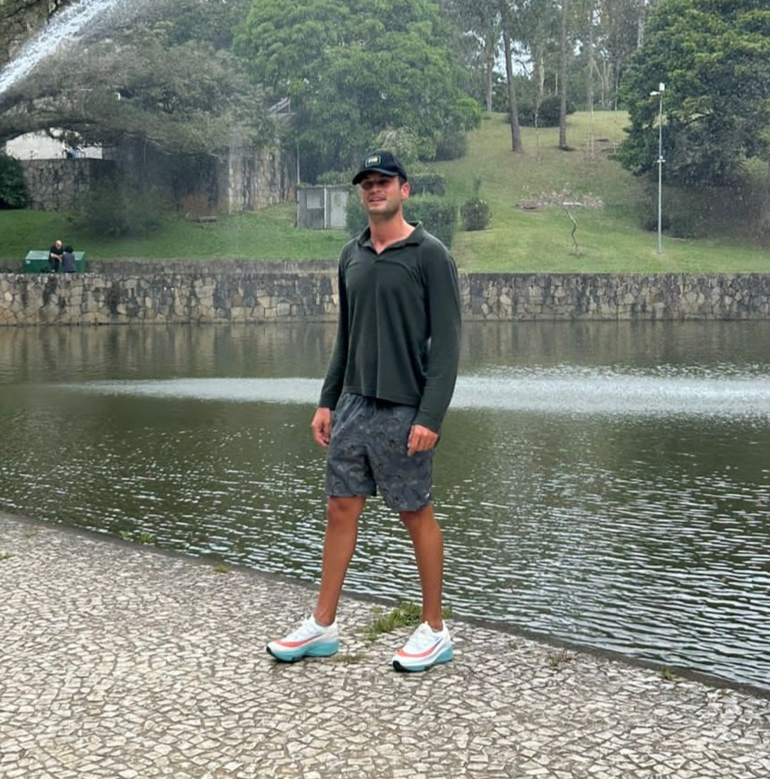

Paulo C. Kataoka
Especialista em Gestão Comercial, fundador e idealizador do CorteVip.site. Atua na criação de soluções digitais que conectam empresas e consumidores de forma estratégica e eficiente.

Ana J. Kataoka
Irmã, parceira e uma das grandes incentivadoras do CorteVip.site. Desde o início do projeto, tem sido fundamental com seu apoio emocional e prático — oferecendo recursos, contribuindo nas estratégias de comunicação e marketing. Sua presença fortalece a missão do projeto e inspira a construção de algo feito em família, com propósito e dedicação.